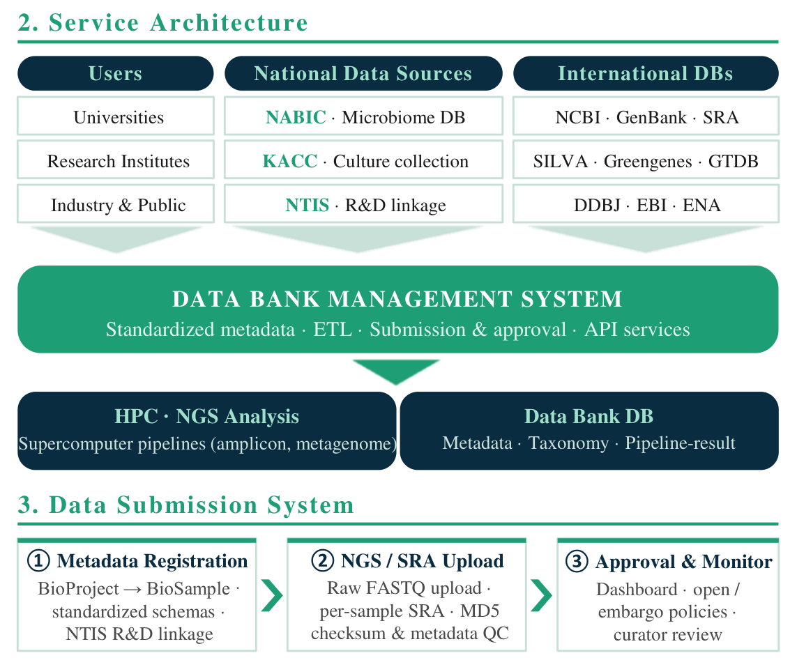

연구과제 목록농생명 마이크로바이옴 데이터뱅크 서비스·등록 구조
2026 한국미생물·생명공학회 발표자료 일부 · 공동저자 참여
RESEARCH PROJECT / 02633155
농생명 마이크로바이옴 데이터베이스 공공 서비스 개발

2026 한국미생물·생명공학회 발표자료 일부 · 공동저자 참여
과제 목표
마이크로바이옴 데이터 표준화, 데이터뱅크, 정성·정량 분석을 연계한 공공 서비스 개발
과제 연구내용
- 마이크로바이옴 데이터·메타데이터 표준화
- 데이터뱅크 구축과 NABIC 연계
- 슈퍼컴 기반 정성분석 체계
- 정량분석 기술 개발
참여기간·세부과제
- 등록 참여기간: 2025.04.15–2026.12.31
- 전체 연구기간: 2025–2028년
참여기간: NTIS 등록 기준
전체 연구과제 보기